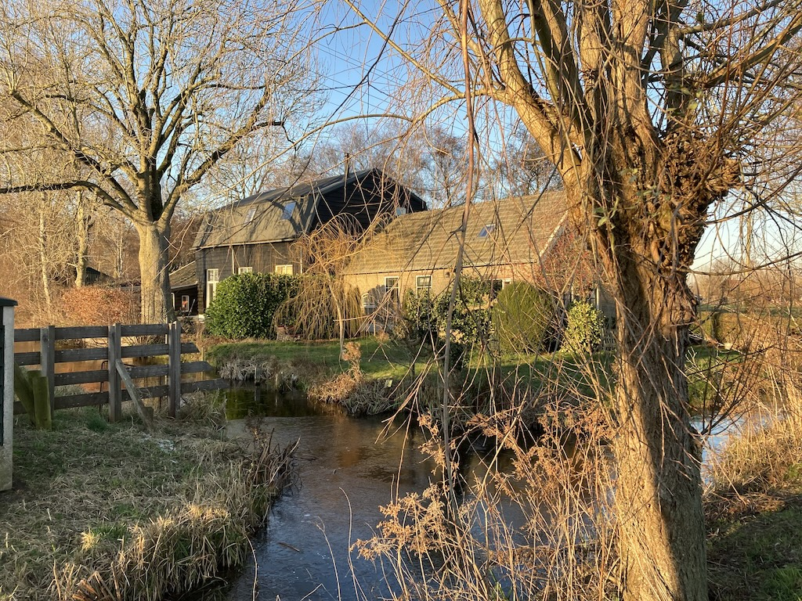
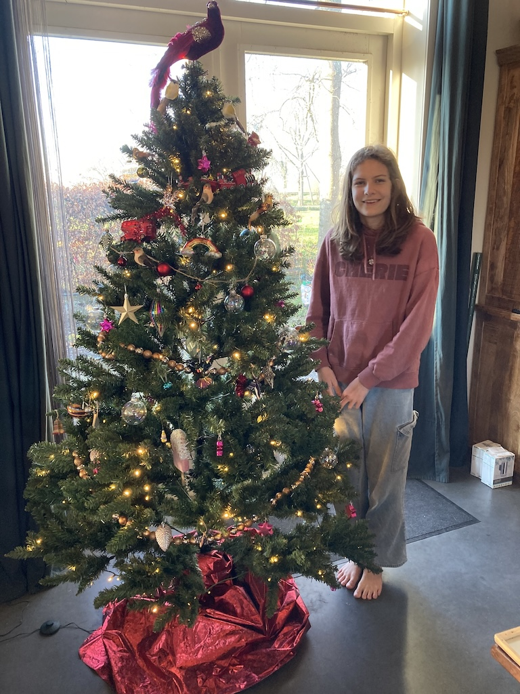
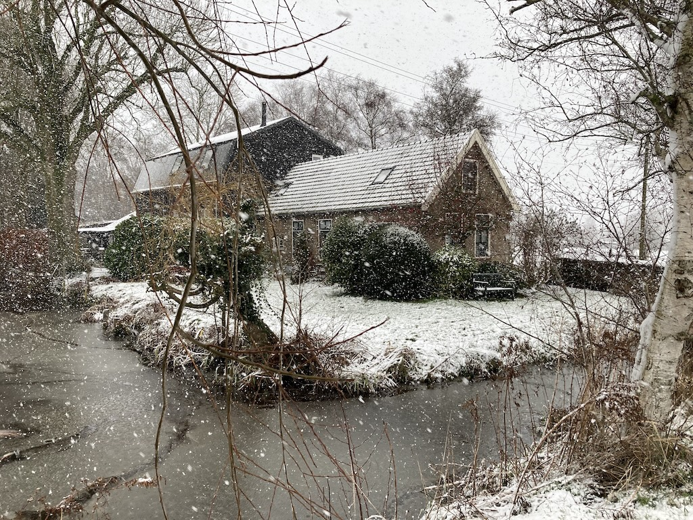

Once again this is the often taken view of Krista's and Paul's cottage and barn. However, this one was taken on Boxing Day 2025 as we returned from a walk. It was sunny, with a slight breeze, but just about zero degrees and thus below zero with the wind factor. Flo didn't mind, but we were ready for some gluwijn when we got back.We arrived on Monday 22nd December, having taken the bus to Shoreham station, a train to Burgess Hill, where we changed for the Thameslink train to St Pancras. We had quite a wait there until we caught the Eurostar to Rotterdam and then a train to Gouda, where Paul met us. It was an easy journey, but a long day.

I mentioned that Boxing Day was sunny, well, so was Christmas Eve and Christmas Day. On the Wednesday afternoon we all went to a garden centre that has masses of Christmas decorations. We had been there before, some years ago. We really only went for some oasis for Rowan to make some table decorations and to look for some new outside lights. We found both, but they also bought some tree decorations. In the photo you can see the bird that Rowan bought to go on the top of the tree. We also started a jigsaw puzzle. It was only a 500 piece one, so we were able to finish it on Christmas morning.On Christmas Eve afternoon, in the sunshine, Paul and I started looking at fixing the new lights on to the barn wall, next to the patio doors. However, the cables where in plastic conduit which poked out from the wooden planks. So we had to make some blocks of wood to bring the mounting surface clear of the conduit. Paul painted these, so we left them in the workshop, to be fixed up another day. During the evening we watched the new 'Knives Out' film.
Greet and Wim came for Christmas dinner. Krista cooked a turkey and Greet brought some pork, so we had a good meal. Although they went fairly early, we stayed up, playing a game and then watching 'The Holiday' film.
I'd developed a bit of a sore throat over Christmas Day and it had developed into a cold by Boxing Day. The others started another jigsaw (1,000 pieces this time) and after lunch we went with Paul, Rowan and Flo for a walk in the still cold sunshine. Most surfaces of the sloten still had a thin layer of ice on them. That evening we watched 'A Christmas Cronicle' and two days after we watched 'Polar Express'. Then on Monday we saw 'The Thursday Murder Club'.
Earlier on Monday we met Greet and Wim at a resaurant next to a lake for lunch. We all enjoyed it, but didn't want much else to eat that day.
Tuesday 30th was a bright, but very frosty day. It didn't start too well in that I had an email from Eurostar saying that there were power problems in the Channel Tunnel and that trains would be cancelled or delayed! Our train was still scheduled, but we had the option to cancel or postpone our trip.
So we proceeded as normal. Paul took us to Gouda for one o'clock, we topped-up our UV-Chip cards and caught the train into Rotterdam. We bought some lunch to have later, but to our surprise the Eurostar UK passport building was closed, although we could see staff inside. After the Eurostar to Paris had departed and the next train on that platform (to Breda) came onto the screens, it said that the next train, the Eurostar to London, was cancelled. Neither we nor anther British couple had received any email about it, so I knocked on the UK passprt control door and they said that they had no idea when trains would be running again!
We found a train about to leave for Gouda and got on it, calling Paul to ask him to pick us up. It seems that not only was there a power problem, but a Le Shuttle train was stuck in the tunnel. There were no Standard fare spaces on any trains to London that we could find, so we booked 'Plus' tickets (paying an upgrade) for Monday 5th January. So we were in Berkenwoude for the New Year!
We moved our things into the cottage since Paul and Krista's friends Martin, Sharon and their two children arrived just after six. On New Years Eve we spent part of the morning trying to find out how the cottage 'works'. Krista had to show us how to make the hob work and, a little later, we failed to get the grill to work.
On New Year's Eve we could hear fireworks being let off at various times during the day. As night fell, so a few more could be heard and seen in the distance. We all (nine of us) stayed up until midnight, when the children 'jumped' into 2026 and ate 12 grapes (a Spanish custom apparently, to bring you good luck for the new year). Then the fireworks really started. You could see masses of them towards Gouda and others in the far distance, which was Rotterdam. THey were also strung out along the local roads. Quite q few were set off in a field near the cottage and the farm on the corner let some off spradically. We stayed inside, but the others went outside for a while. It seems that the Dutch are 'insane' about fireworks. They went on continuously past two o'clock and a few were still being let off after four am. We eventually went to bed at 2:30, with the din still going on. Welcome to 2026!

And then there was snow! When we woke on the morning of Saturday 3rd January the landscape was white and the snow was still falling. And it continued to snow for most of the day. Then there was more snow on Sunday. At one point there was a rumbling and all the snow on one side of the barn roof slid off onto the drive. Later, Paul and I cleared the drive, including the snow that had slid off the roof. On Sunday, after more snow, I helped Paul clear the drive of snow.There was more snow overnight and, needless to say, our Eurostar train for Monday was cancelled. At least we were told that it would not be stopping at Rotterdam! So we booked another train for Tuesday, which had the better weather forecast over the next few days, at further expense of course, since we had to upgrade our ticket to Club class. Unfortunately we had to book an indirect train, so we had to change at Brussels.
Tuesday's Eurostar train from Amsterdam was only five minutes late. However, since it was staying in the EU it had lots of passengers travelling to France and we found people already sitting in our seats. They went off to try to find some other seats, but there seemed to be a lot of people also looking for spare seats.
We arrived in Brussels, but found mayhem around the Eurostar 'terminal'. It seems that there had been other disruptions and there was a mass of people, with no real information as to what was going on. We stood outside the terminal for two and a half hours before our train was announced. By the time we were on board we were running three hours late!
However, that leg of the journey was good. Since we had upgraded we had wider seats with more leg room and we were served a meal at our seats, including wine. There was internet access, so I was able to find out the times of the ThamesLink train from St Pancras. Our only option was to go to Brighton and then catch the last train along the South Coast, which was only going to Worthing, but we were getting off at Shoreham.
While we were waiting for our train at Brighton I booked a taxi to meet us at Shoreham station, which it did. We were home at a quarter to one; to a very cold house, which took several days to warm up.
So our one-week visit to Berkenwoude became a two-week visit. We were exhausted and vowed not to travel again over the Christmas period. Lots of other people are travelling and there are more opportunities for travel disruption.